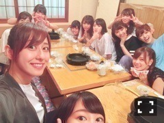
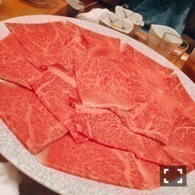
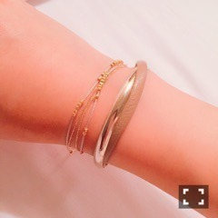

| 2016/08 18 Thu | 斎藤ちはる 至福の時間〜(´>∀<｀)ゝ |
ちはるーむへようこそ( ◦˙ ˙◦ )
今日は真夏の全国ツアー、
福岡ライブ初日！
中々来る機会がない福岡に
こうしてメンバーと一緒に来られて
ライブをして皆さんが楽しんでくれて
本当に幸せだなと感じます。
皆さんいつも応援してくれて
ありがとうございます！！
(﹡ˆ ˆ﹡)
全国ツアー地方公演が
明日で終わると思うと
長かったようでとても短く感じる！
あっという間でした(｡･o･｡)ﾉ
神宮はBirthday Liveなので
今のセトリも明日で最後。
私的にとても好きなセトリなので
少し寂しい。
明日は今までよりも更に
一曲一曲、大切に歌おう(_ _).｡o○
-------------------------♡
ツアー中は地方各地で
ライブ後にご飯を食べる会が
開かれるのですが
今日行ってきました〜！！

いくちゃん、まいやん、真夏、まっちゅん、
さゆ、万理華、生駒、なーちゃん、
優里、川後、かりん、純奈、らんぜ、琴子！
すき焼き...♡♡

にーく！にーく！にーく！
んもうビックリするくらい美味しくて
幸せ〜〜( ;o; )♡
ってみんなで言いながら食べてました。
食べ終わったいくちゃんが
甘えてきました。
ぐで〜〜っとするいくちゃん。
お腹いっぱいになって
食べ疲れした。。って言ってました(｡･o･｡)ﾉ
美味しいお肉に囲まれて
楽しいメンバーに囲まれて
凄い楽しい時間(﹡ˆ ˆ﹡)！
明日も頑張れそうです♪
-------------------------♡
#ChihaOOTD
今日は最近好きなブレスレットを紹介します！
実はチョーカーやイヤリングだけではなく
アクセサリー全般が好きなので
ついつい集めちゃいます。

細いブレスレット: Juicy Rock
太いブレスレット: BEAMS
チョーカー以外のアクセサリーを
ハンドメイド以外で買うのは
圧倒的にこの２つのお店が多い！！
お気に入りのお店なの。
BEAMSはファッションは勿論
アクセサリーの充実度が半端ないです。
一癖のあるアイテムが揃ってます。
Juicy ROCKは大人っぽく、
シンプルなアイテムが多いです！
愛未に教えてもらったの。
通販もオススメです！
どちらのお店も、高すぎず低すぎず
プレゼントにもピッタリ♡
是非参考にしてみてください〜！！
-------------------------♡
♬ ChihaMusic
「DAY×DAY」BLUE ENCOUNTさん
テンポも早いし
歌詞も前向きなので
やる気を出したい時や
元気を出したい時、
世の中に立ち向かいたい時(?)に
聞くのがオススメ！！
勇気出てきます。
明日も楽しんできます！♡
おやすみ〜
斎藤ちはる